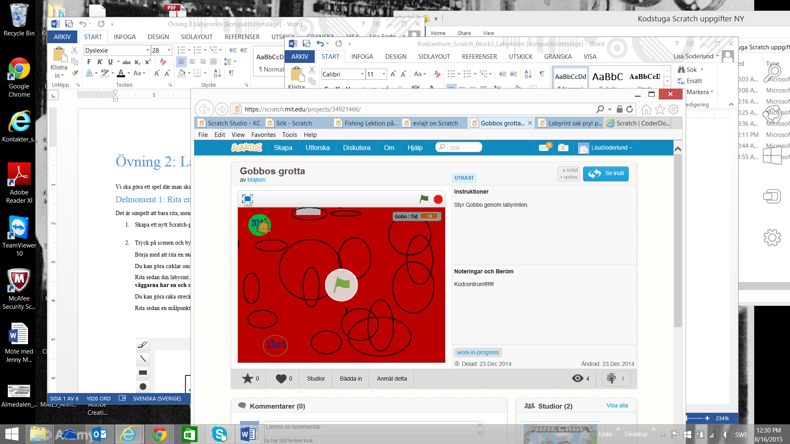
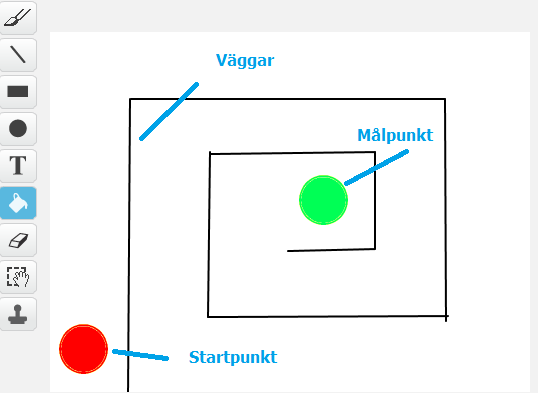
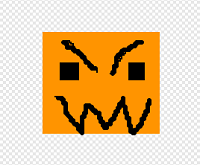
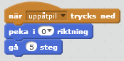
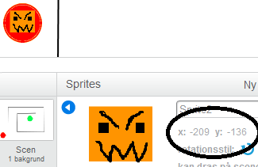
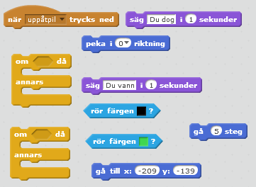
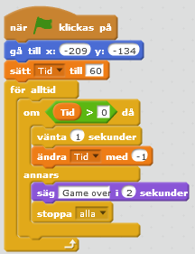
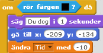

Det här är ett spel där du ska försöka ta dig igenom en labyrint och komma till nästa nivå, en ny bana. Det är ett roligt spel för dig som vill hitta på och rita mycket själv! Du kommer att få lära dig att använda variabler och funktioner.
Två exempel på hur olika spelet kan se ut ser du här:

Du väljer själv hur du vill rita din labyrint, men du måste följa vissa regler för att få spelet att fungera.
Skapa ett nytt projekt. Ta bort katten genom att högerklicka på den och välja radera.
Tryck på SCEN och byt till fliken BAKGRUNDER. Börja med att välja bakgrundsfärg, genom att fylla bakgrunden med en färg.
Rita sedan din labyrint. Kom ihåg att ha ganska stora mellanrum mellan väggarna och se till att väggarna har en och samma färg. Du kan göra raka streck om du använder LINJE-verktyget.
Rita en startpunkt, den får inte ha samma färg som väggarna eller bakgrundsfärgen. Du kan till exempel göra cirklar med CIRKEL-verktyget.
Rita sedan en målpunkt i slutet av din labyrint. Målpunkten måste också ha en helt egen färg.

Nu ska du själv rita den sprajt som ska ta sig igenom labyrinten! Vad för karaktär vill du spela som?
Radera Sprajt1 (Katten) och välj Rita ny sprajt. Rita vad du vill, men gör den tillräcklig liten för att den ska få plats att ta sig igenom labyrinten. Tänk på att du kan använda förminskningsknappen efter det att du har ritat sprajten.

Exempel på en sprajt.
Nu vill du att din sprajt ska kunna röra sig igenom labyrinten.
Gör ett skript för din sprajt som säger2:
Starta när pil upp-tangenten trycks ned
Då ska sprajten först peka uppåt
Sedan röra sig ett par steg
Gör tre till likadana skript, fast för att styra vänster, höger och nedåt.

Tänk på att ha olika riktningar i de olika skripten
Testa ditt projekt! Klicka på START. Kan du röra din sprajt åt alla håll? Går den i lagom hastighet? Nu kan du använda piltangenterna för att styra sprajten, men du skulle också kunna välja helt andra tangenter.
Tips: Du kan själv ändra hastigheten genom att ändra hur många steg sprajten tar när den rör sig.
Dags att göra det här till ett spel! Du behöver se till så att varje gång din sprajt nuddar väggen, förlorar du och hamnar tillbaka på startpunkten. Men nuddar sprajten målpunkten vinner du.
Ta först reda på var din startpunkt är. Sätt din sprajt mitt på startpunkten på SCEN. Högerklicka på sprajten och gå in på information (lilla i:et vid din sprajt). Titta på vad din sprajt har för KOORDINATER. Kom ihåg eller skriv upp dem!

Nu behöver du uppdatera alla skript för rörelser så att sprajten hela tiden känner av ifall den är i mål eller nuddar en vägg.
Börja med skriptet för uppåt och ändra så att det säger:
Starta när pil upp-knappen trycks ned
Känn av om sprajten har nuddat en vägg
Känn av om sprajten har nuddat målpunkten
Annars ska sprajten röra sig som förut (peka uppåt och gå ett par steg framåt)

Tips: Förstår du hur sprajten ska kunna känna av väggen, startpunkten och målpunkten? Kom ihåg att de har olika färg! Förstår du hur sprajten ska kunna veta var startpunkten är, när den ska gå tillbaka dit? Tänk på att du har tagit fram dess KOORDINATER tidigare. Minns du?
Gör nu samma ändringar för alla skripten. Kom ihåg att du fortfarande måste ha rätt riktning och tangent för varje skript.
Testa ditt projekt! Klicka på START. Går sprajten åt rätt håll och med en hastighet som känns bra? Säger den att "Du dog!" när du nuddar en vägg? Går den tillbaka till startpunkten. Säger den "Du vann!" när du nuddar målpunkten?
Dags att göra spelet lite svårare! Du ska se till att spelaren har en viss tid på sig att ta sig igenom labyrinten. Om du inte är i mål när tiden är slut förlorar du!
Skapa en VARIABEL som heter Tid. Den ska vara synlig på scenen.
Gör ett nytt skript för sprajten som säger:
Starta när START klickas på
Gå till startpunkten
Sätt Tid till 60 sekunder (eller välj själv antal sekunder)
För alltid om Tid > 0
Då ska sprajten vänta 1 sekund
Ändra Tid med -1
Annars säg "Game over" och stoppa alla skript

Nu har du en timer, det vill säga en tidräknare! Men för att göra det ännu svårare ska du nu säga åt sprajten att den förlorar extra mycket tid om den nuddar väggen.
Lägg till ett block som ändrar Tid med -10 på alla dina skript som kollar om sprajten har nuddat väggen. Kommer du ihåg vilka skript det är?

Så här ska alla skript se ut som kollar om sprajten nuddar väggen
Testa ditt projekt! Klicka på START. Räknar tiden ned? Vad händer om du nuddar väggen? Är det enkelt eller svårt att spela? Tänk på att du kan ändra tiden som timern startar med, om du vill.
Som spelet ser ut nu händer ingenting när du vinner. Det ska du ändra på nu! Du ska få göra så att du kommer till en ny bana, en ny nivå, när du tagit dig genom labyrinten.
Gå till SCEN och tryck på fliken för KLÄDSLAR. Kopiera din klädsel så du har två likadana. Välj den andra och sudda bort allt förutom startpunkten.
Du kan nu rita en ny labyrint precis som du vill ha den, men kom ihåg att använda samma färger på väggarna och på målpunkten som i förra labyrinten.
Nu behöver du se till att den nya banan kommer upp när du har vunnit den första. Det gör du genom att lägga till ett block som sänder ut ett meddelande när du nuddar målpunkten. Kalla meddelandet för NästaNivå.

Lägg sedan till ett nytt skript för scenen som säger:
När sprajten tar emot meddelandet NästaNivå
Byt till nästa klädsel
Testa ditt projekt! Klicka på START. Vad händer när du har klarat den första banan?
Grattis, nu har du gjort klart uppgiften.
Glöm inte att spara ditt projekt! Döp det gärna till uppgiftens namn så att du enkelt kan hitta den igen.
Testa ditt projekt
Visa gärna någon det som du har gjort och låt dem testa. Tryck på DELA för att andra ska kunna hitta spelet på Scratch. Gå ut till projektsidan och låt någon annan testa spelet!
Har du tid över? Här kommer ett par utmaningar för dig som vill fortsätta.
Du kan lägga till ännu fler nivåer genom att rita nya bakgrunder som följer reglerna:
Samma position på startpunkten
Samma färg på väggarna
Samma färg på målpunkten
Att det inte finns andra saker med samma färg som väggen eller målpunkten
Det behöver inte vara väggarna i labyrinten som skickar tillbaka dig till startpunkten. Du kan hitta på egna monster eller andra slags hinder som du måste ta dig förbi på väg till mål.
Tänk på vilken färg hindren har, så att de inte har samma färg som vägg eller målpunkt
Välj själv om du vill att hindren rör sig eller om de ska stå stilla
Se till så att det faktiskt är möjligt för sprajten att ta sig förbi hindren
Ändra skriptet för sprajten så att den känner av hindren på samma sätt som väggen
Kan du ändra i skriptet för din sprajt så att den kan krocka mot väggen utan att gå tillbaka till startpunkten, men att väggen fortfarande är ogenomtränglig?
Var kan du hitta de nuvarande koordinaterna för en sprajt?
Vad är en variabel?
Vad händer om start och mål har samma färg?
Vad måste du tänka på när du skapar flera banor?